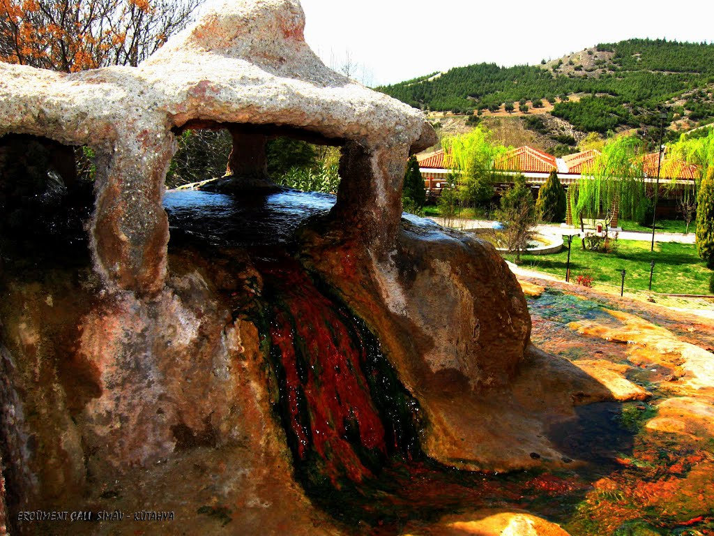

Karahayıt beldesinde bulunan kaplıcalar Denizli’deki termal suyun çıktığı noktalardan birisidir. Pamukkale’yi oluşturan termal noktalardan farklı olarak karbondioksit miktarı daha da az olan kaplıca suyu ayrıca diğer termal noktalardan çok daha sıcaktır. Kırmızı termal suyu ile bilinen kaplıca suları, Ege Üniversitesi’nce yapılan araştırmalarda bir şifa kaynağı olduğu ortaya çıkmıştır. Hipertermal ve hipotonik maden suyu olan Karahayıt Kaplıcaları hem içilebiliyor hem de banyo yapmak için kullanılabiliyor. Dolaşım sistemleri rahatsızlıkları, safra kesesi problemleri gibi sorunları çözdüğü ve astım, tansiyon ve diyabet için de şifa dağıttığı söyleniyor.
Daha fazla bilgi için tıklayınız